Gamma during natural viewing: establishing the neural signals
Part 1 · Working report for discussion · 28 September 2026
This report starts with the biological motivation, then asks whether our simultaneous eye, spike, and field recordings contain the neural signatures reported in the literature. It presents the completed 30-session comparisons and follows one recording from each animal through the same analyses. Later installments can address individual oscillatory bouts, eye–neural coupling, and stimulus information.
1. Why this question is interesting
The starting observation is Figure 5 of Ahissar and Arieli’s Figuring Space by Time (2001): the frequency ranges of small fixational eye movements and visually driven cortical oscillations overlap.
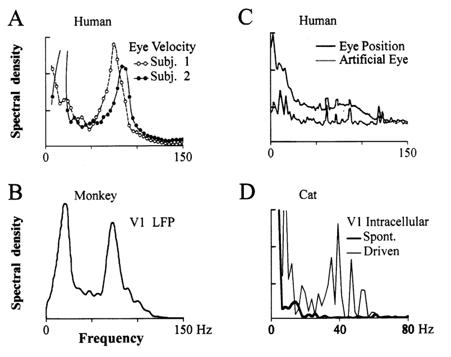
A stationary photograph does not produce stationary input to the retina. During fixation, drift and tremor move the image across photoreceptors. An image edge or fine texture therefore becomes a time-varying input. The hypothesis is that the nervous system could use some of this timing to represent spatial detail. Similar eye and cortical frequencies are suggestive, but they do not establish that the two signals interact or that their interaction carries useful visual information.
The relationship between image structure and cortical gamma makes this question more concrete. Uran, Peter and colleagues, including Pascal Fries, found that natural images with more predictable local structure produced stronger V1 gamma synchronization. The distinction is important: gamma was especially associated with the contextual predictability of low-level image structure, while firing rates were more closely related to predictability of higher-level features. Predictability is an appealing organizing idea, but it should not be paraphrased as gamma encoding semantic content. Uran et al., 2022.
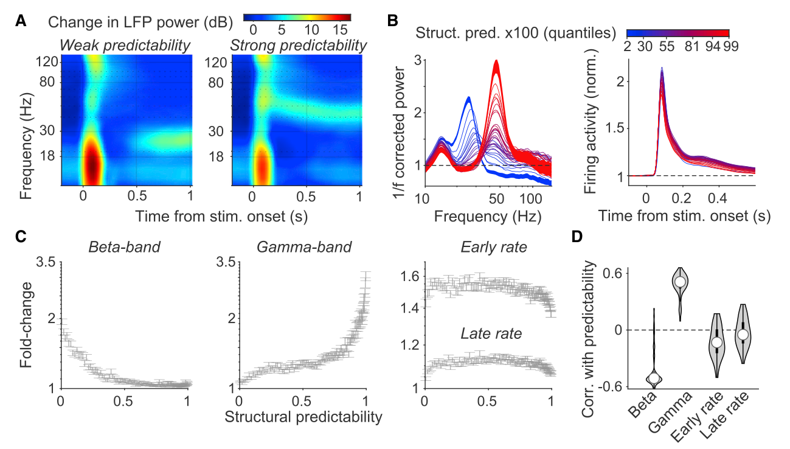
Together, these papers motivate three successive questions. First, what recurring neural signals are actually present in our V1 recordings? Second, do those signals relate to the retinal changes produced by gaze? Third, does their relationship reveal image information beyond what we can read from spike counts alone? This installment establishes the first comparison. Gamma, firing rates, and temporal codes need not be mutually exclusive explanations.
2. What our recordings look like
We have simultaneous high-resolution eye tracking, sorted spikes, and laminar field recordings during natural-image viewing in two marmosets, Allen and Logan. The analyses below use the 30 sessions already designated as good: 14 from Allen and 16 from Logan. The probe has two shanks, each with 32 contacts at 35 µm depth spacing; the shanks are separated laterally by 200 µm. Receptive fields remain on the displayed image, as confirmed by the experimenter.
The eye tracker is sampled at its native rate, typically about 540 Hz, with session-specific differences. LFP is reconstructed at 1 kHz from raw recordings. Spikes retain their acquisition timestamps. A common clock lets us inspect all three without shifting one signal until it visually matches another. This chapter applies no eye-to-neural response-delay shift.
The two running examples are Allen_2022-04-13 and Logan_2019-12-20. These are familiar sessions chosen for exposition, not statistically representative days. Within each, the single-trial example follows the previously fixed rule: the first quality-eligible trial at the median available contact of the superficial group on shank 1. No gamma threshold selected those trials. The later session-average panels use all eligible events in each example session.
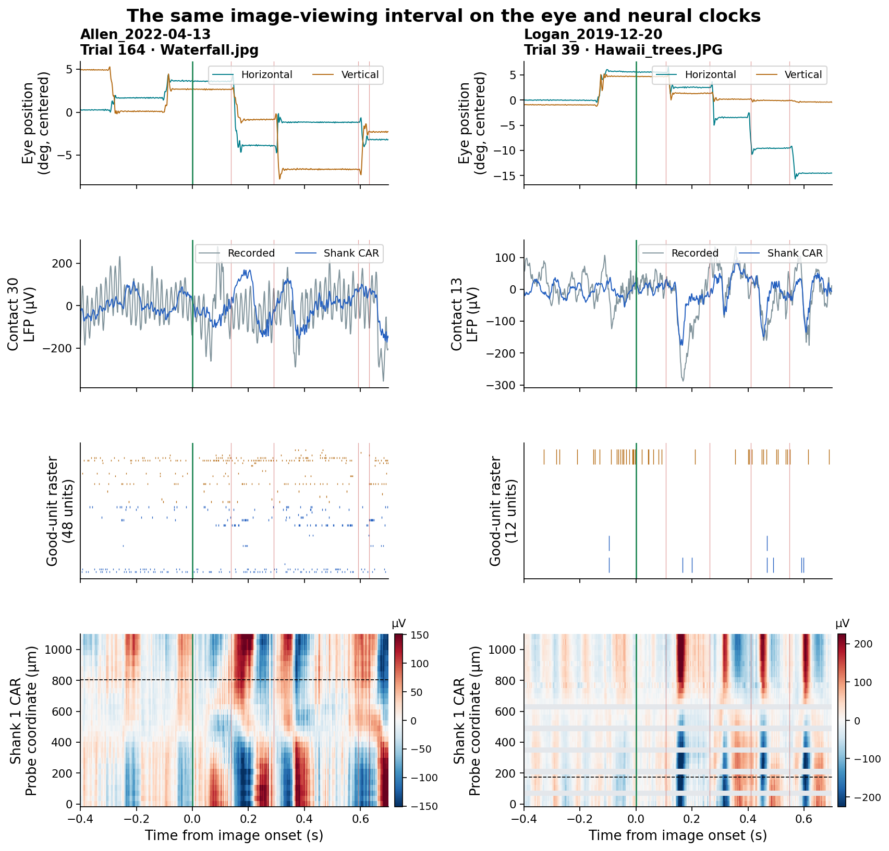
Large slow voltage changes, rapid ripples, and brief deflections can coexist. The field is also shared to different degrees across contacts. Consequently, a visible ripple, a spike volley, and an increase in spectral power should not automatically receive the same interpretation. The examples make those distinctions inspectable before we average anything.
3. Preparing the field without defining gamma into it
The primary signal is calibrated broadband LFP derived from the original recording. We use a 250 Hz low-pass followed by anti-alias resampling to 1 kHz, with two seconds of context. Filtering does not cross acquisition gaps. We do not apply the fixation browser’s 30 Hz display high-pass to these analyses, and the primary figures are unnotched.
| Step | Purpose | Consequence for interpretation |
|---|---|---|
| Recorded voltage calibration and acquisition-clock conversion | Put contacts in µV and align them with behavior | Timing and amplitude remain physical measurements. |
| Context-aware filtering and anti-alias resampling | Retain the LFP range without chunk-edge artifacts | The earlier short-padding export had boundary errors; the present primary input is reconstructed from raw data. |
| Fixed contact-quality and local sample masks | Exclude dead, clipped, or invalid data | Rejected samples remain gaps, not zero voltage. A clip’s surroundings must not redefine its CAR contacts. |
| Separate shanks and depth groups | Preserve spatial differences | Calculate power or phase consistency at each contact before averaging; do not average signed voltages across layers. |
| Recorded, shank CAR, and lateral-difference comparisons | Examine the influence of shared voltage | Spatial subtraction can remove shared neural signal as well as interference. |
| Notch/line-projection sensitivity analyses | Check dependence on 60/120 Hz features | A line-like frequency is not identified as noise solely because subtraction removes it. |
Known-packet and transfer-function checks show that the software preprocessing retains about 98% of 80 Hz power, about 95% at 100 Hz, and about 62% at 180 Hz. Thus, the software low-pass cannot by itself erase a large 80 Hz rhythm. Acquisition hardware has not been independently calibrated, and the upper part of the time–frequency maps needs more caution. In the saccade figures, the region above 180 Hz is shaded for that reason.
What “superficial,” “input,” and “deep” mean here
These are provisional functional depth groups, not histological assignments. The existing landmark combines flash-CSD energy and flash high-frequency responses; Allen June 1 uses a manually specified interval midpoint. Contacts within ±140 µm of the center form the near-input group. Superficial/deep directions and anatomical exclusion bounds follow the stored probe map.
An independent check identifies a negative flash-CSD sink at 30–60 ms and requires it to be away from the CSD edge and reproducible within 70 µm across trial halves. 44 of 60 shanks qualify; eight of those differ from the existing landmark by more than 140 µm. Sensitivity analyses compare the alternative landmarks on the same qualifying shanks. The main figures below retain the existing grouping, so their coverage remains the full cohort.
| Example session | Shank | Current landmark | Independent early sink | How much confidence to place in the grouping |
|---|---|---|---|---|
| Allen April 13 | 1 | 805 µm | 805 µm | Agreement between the two definitions. |
| Allen April 13 | 2 | 420 µm | 665 µm | Reproducible alternative, but a substantial 245 µm discrepancy. |
| Logan December 20 | 1 | 175 µm | Not qualified | Existing grouping remains uncertain; the nominal sink does not pass the independent criterion. |
| Logan December 20 | 2 | 210 µm | 175 µm | Qualified alternative within one 35 µm contact step. |
Probe coordinates increase according to the acquisition geometry; they are not distances measured from a histologically identified cortical surface. The Logan example also has few retained deep contacts on one shank. Apparent layer differences should therefore be interpreted more cautiously than the presence of an event-related response itself.
4. Image onset: a direct comparison with Brunet and colleagues
Brunet et al. (2015), also with Fries, provide the natural-viewing benchmark. They recorded surface ECoG in macaques and reported pronounced 50–80 Hz activity during image viewing, with a lower-frequency excursion after saccades. Their Figure 2 connects the actual voltage to its spectrogram and spectral change. That is the comparison we want, rather than a spectrum detached from the waveform that generated it. Brunet et al., 2015.
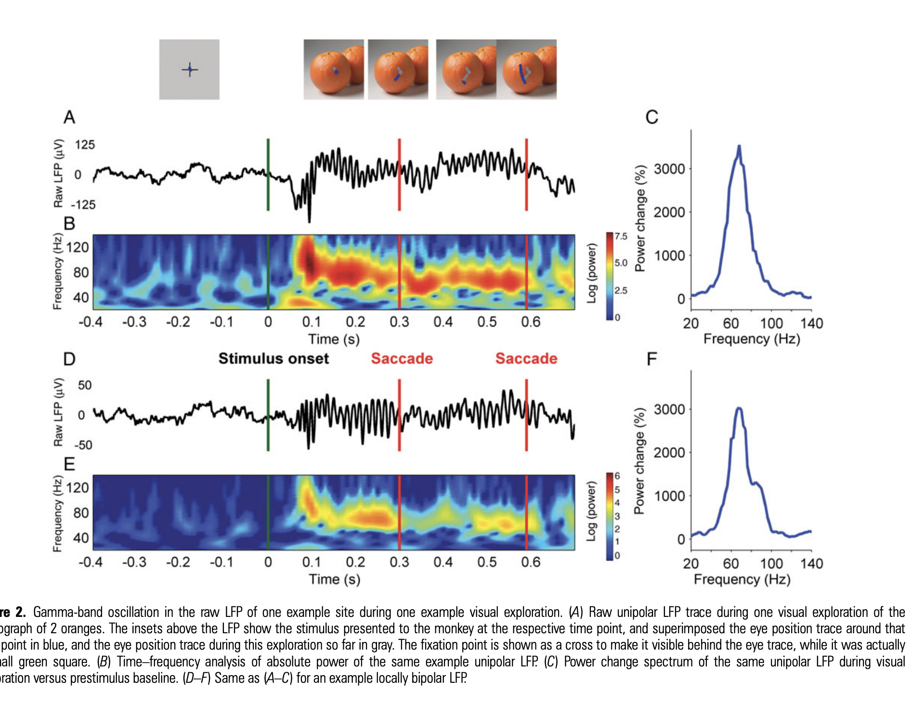
The same three measurements in our two example sessions
For each example below, the left panels show voltage and a four-cycle Hann time–frequency estimate from the same contact and trial. The right panel compares image and pre-image spectra. It uses eight DPSS tapers, 500 ms windows, and ±8 Hz smoothing. Three overlapping image windows start at 0, 100, and 200 ms; the baseline is the 500 ms before image onset. These starts are explicit implementation choices because the paper does not specify their exact placement.
Power change is 100 × (image power / pre-image power − 1): +100% means twice the baseline power; zero means no change. A weak baseline can yield a large ratio. The spectrogram shows absolute power in dB, so its colors do not have that same interpretation. All three reference rows share one spectral color scale within an example, while voltage axes retain their own printed ranges.
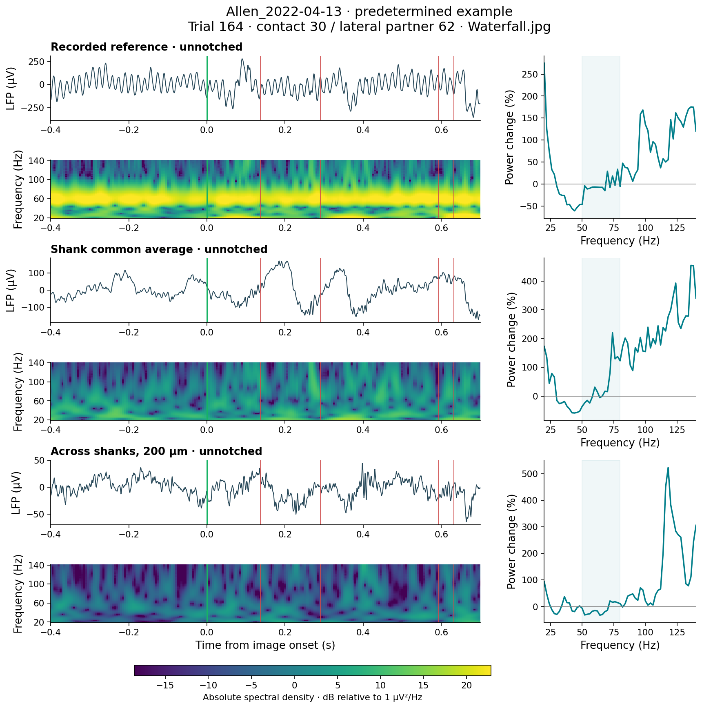
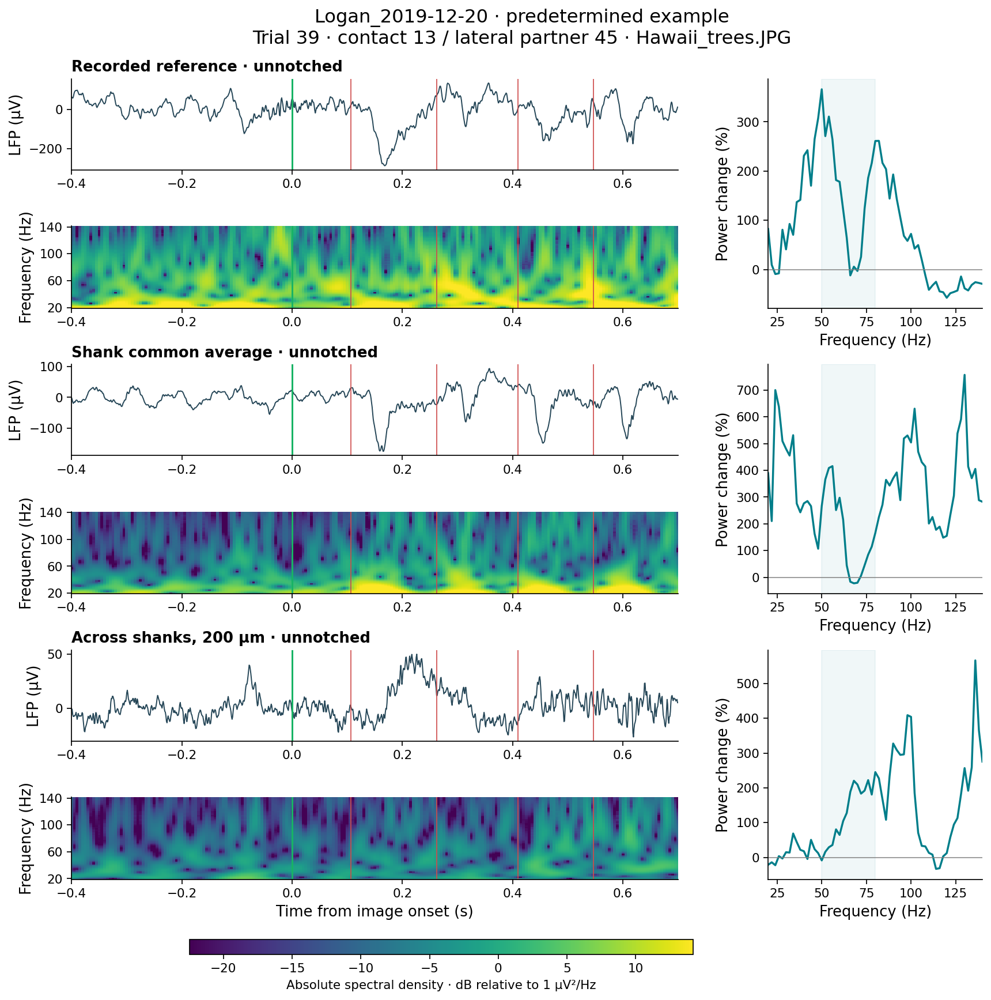
Across sessions
The population comparison uses the paper’s nonoverlapping 500 ms Hann windows after the first 300 ms of image viewing, with paired pre-image measurements. Image and baseline powers are averaged across paired trials before division at each contact; contact ratios are then averaged within depth group, followed by equal weighting of sessions within each animal. This uses 4,262 paired trials. Its denominator differs from the saccade analysis because eligibility requires different temporal support.
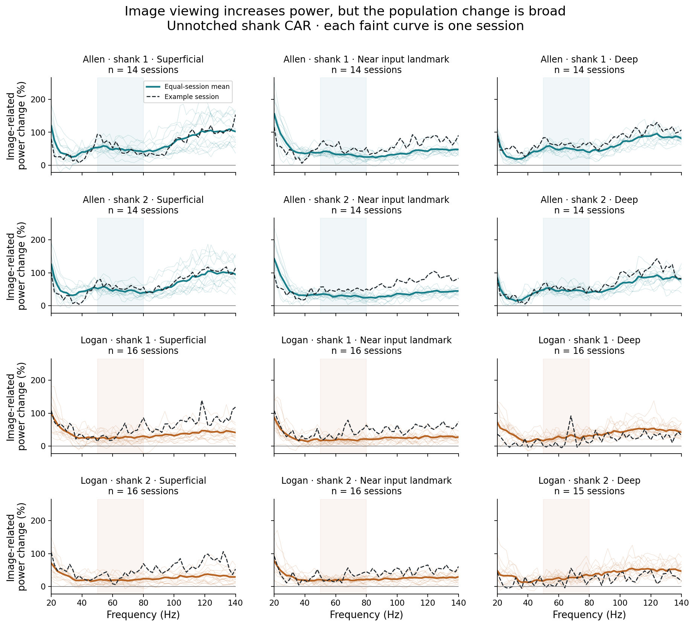
Across the six shank/depth group means, 50–80 Hz power is 30–49% above pre-image in Allen and 19–26% above pre-image in Logan. Much of the increase spans a wider frequency range. This supports an image-related increase in field activity, including gamma-range frequencies. It does not yet reproduce the paper’s strong, sustained, narrow-band phenotype as a general feature of our recordings. Separately selected trials can show clearer recurring cycles; they must not replace the all-session summary or be used to estimate prevalence.
5. The saccade cycle: power and phase are different measurements
Ito et al. (2013) provide a second benchmark during natural viewing. Their Figures 3 and 4 ask two complementary questions: does activity at a frequency become stronger after a saccade, and does the field return to a similar phase at that time on successive saccades? A strong oscillation can start at a different phase each time. High power therefore does not require high phase alignment. Ito et al., 2013.
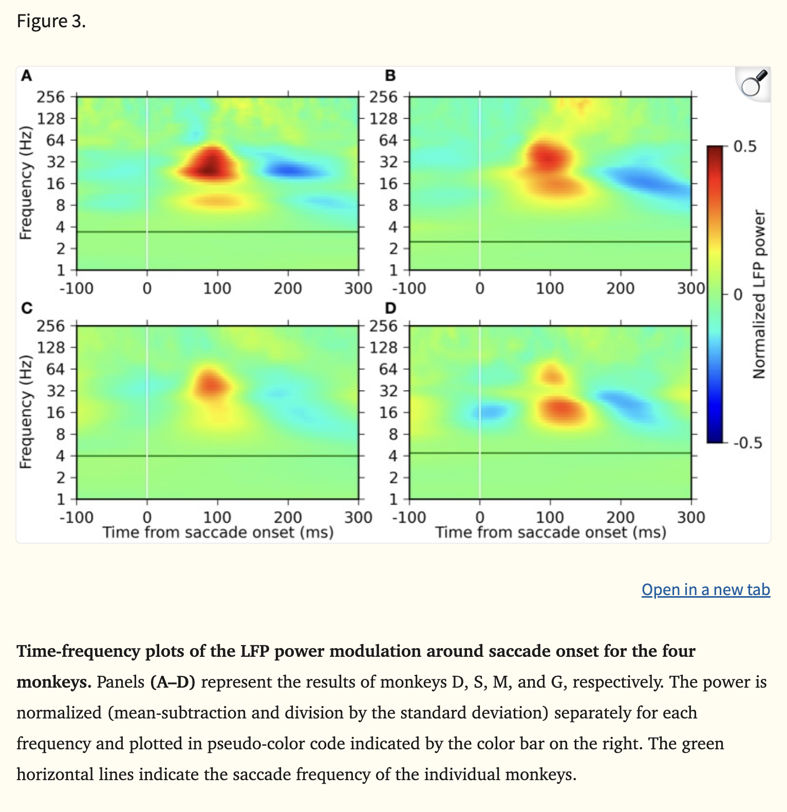
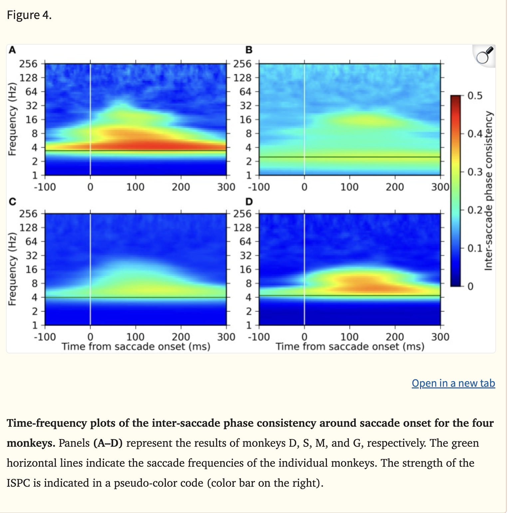
How to read our counterparts
We use the paper’s approximately five-cycle Morlet construction and logarithmic frequency grid, retaining slow activity. For power, each contact/frequency is standardized using the mean and standard deviation over valid image-viewing time across trials, then averaged over saccades. Red means above that frequency’s usual power; blue means below it. This is a z-score, not a pre-image percentage change. A persistent 60 Hz component can consequently be inconspicuous in this display.
For phase consistency, we measure how concentrated the phases are across saccades at each contact and frequency. Zero indicates little repeatable phase and one indicates perfect agreement. We then average contact-level measurements within depth groups and give sessions equal weight. We never average signed voltage or phase angles across layers. Sample-size bias remains relevant; an unbiased squared phase-consistency measure was retained as a sensitivity check.
The main maps retain short fixations and surrounding saccades. Saccades follow the specified velocity/acceleration criteria; a separate sensitivity analysis requires ≥100 ms of stable fixation. Our eye positions are explicitly smoothed at 50 Hz for this event detector, unlike the paper’s search-coil acquisition. Continuous recording supplies wavelet context without crossing gaps. At 1 Hz, a five-cycle wavelet spans approximately five seconds: the slow-frequency rows cannot resolve a precise change confined to tens of milliseconds.
| Animal | Sessions | Usable image trials | Saccades in the main maps | Saccades passing the additional stable-fixation rule |
|---|---|---|---|---|
| Allen | 14 | 2,385 | 73,756 | 49,370 |
| Logan | 16 | 1,925 | 62,041 | 35,779 |
| Total | 30 | 4,310 | 135,797 | 85,149 |
These are event counts, not independent animal replicates. Overlapping windows and repeated image presentations are not independent observations. The cohort contains two animals.
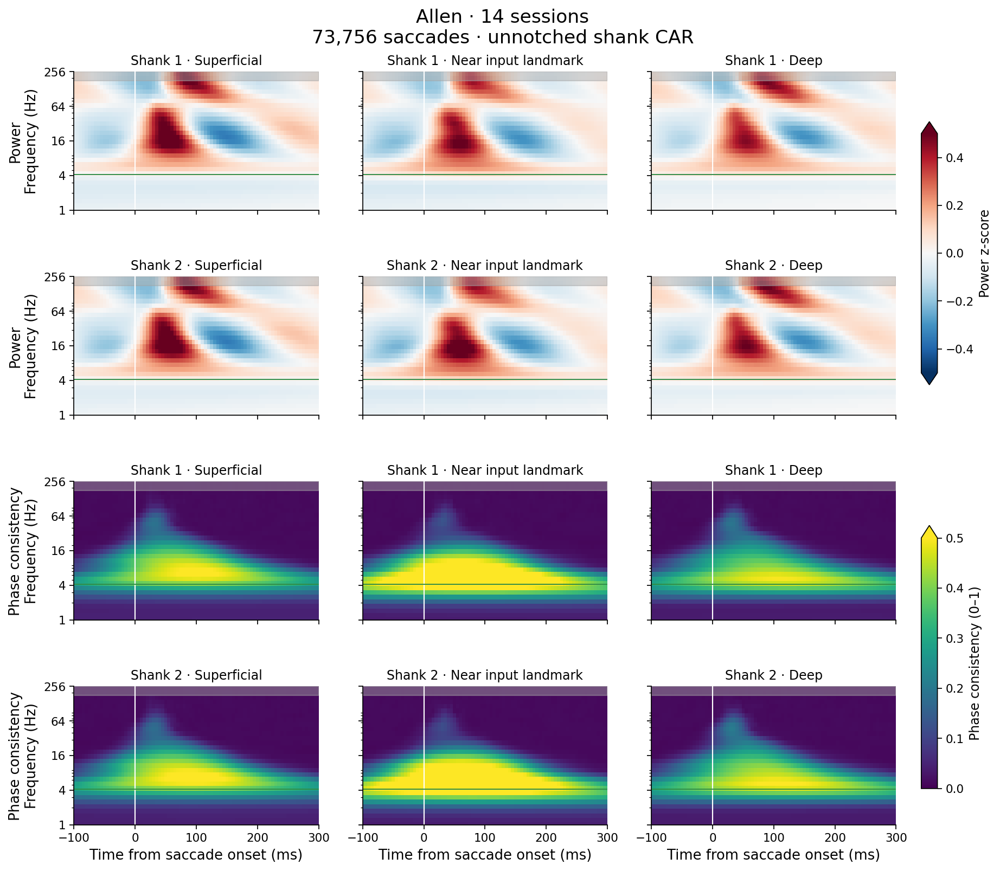
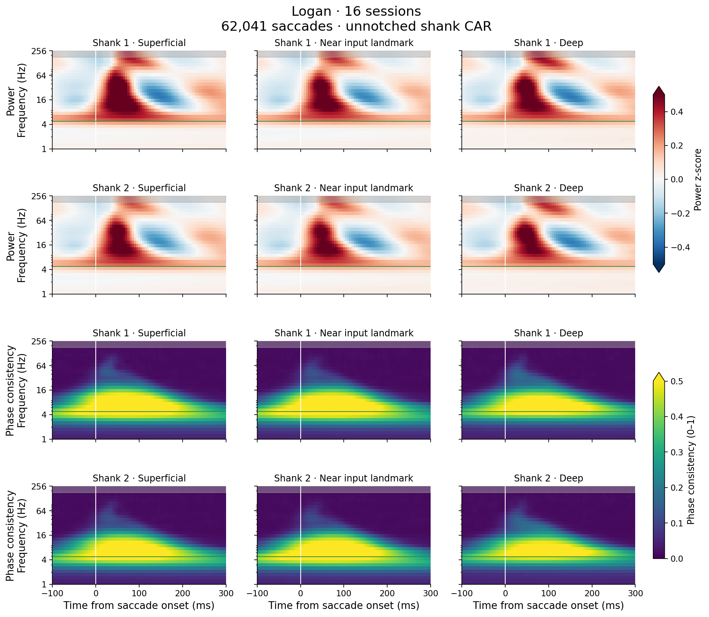
Both animals show a brief 20–40 Hz power increase after saccade onset, followed by a decrease. The group mean time courses peak around 45–55 ms, earlier than the approximately 100 ms peak visible in the supplied Ito figure. Event detection, species, and recording geometry differ; their contributions to the timing difference have not been isolated.
Slow phase is much more repeatable than gamma phase: over 50–150 ms, CAR group means have 2–8 Hz phase consistency of 0.32–0.49, compared with 0.016–0.021 at 50–90 Hz. These are ranges across group means, not confidence intervals. The slow-phase/fast-power distinction qualitatively matches the published pattern. The higher-frequency power near the post-saccadic response could include oscillations, spike-related activity, or sharp transients; the map alone does not separate them.
The same analysis within the two example sessions
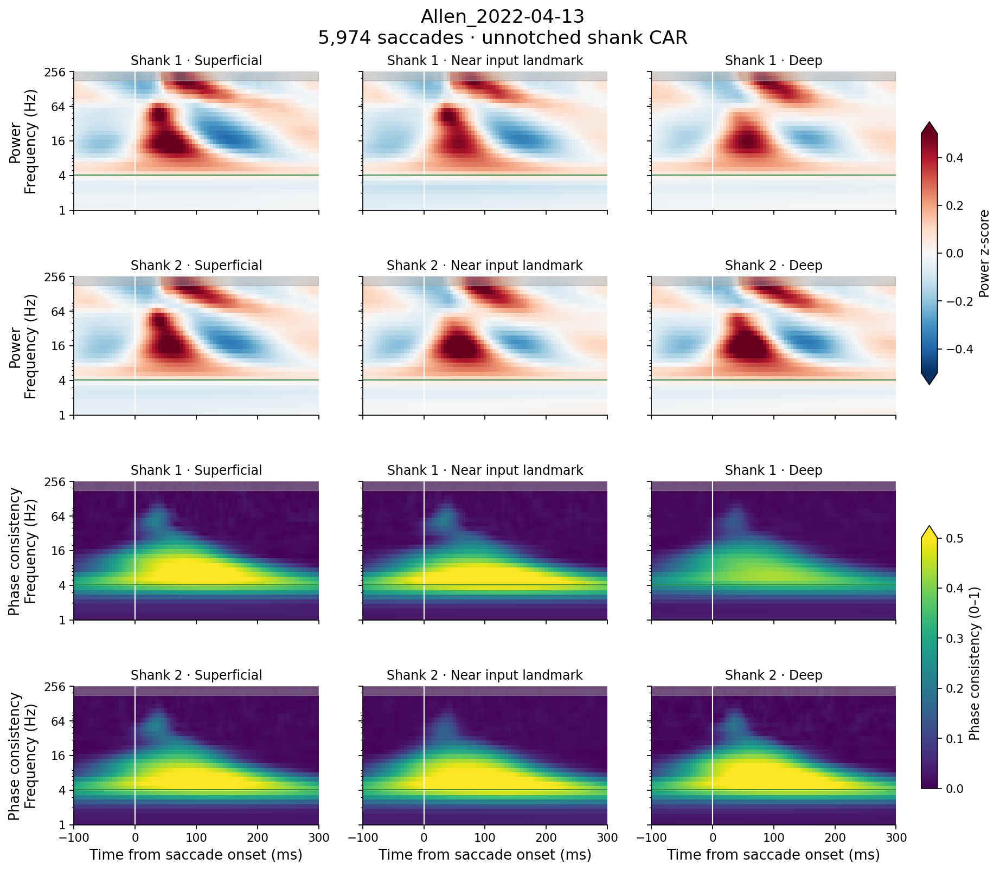
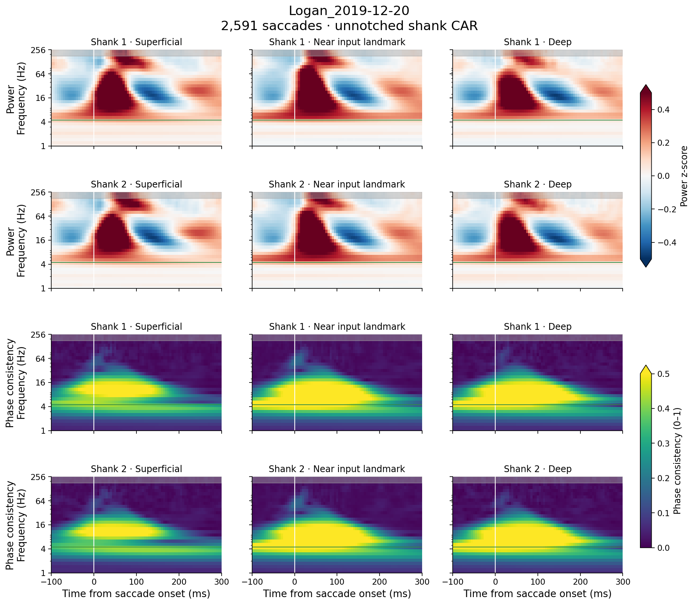
The main power and slow-phase patterns also remain in the completed checks using the stricter fixation rule, a 60 Hz notch, and independent flash-sink groupings on matched supported shanks. Cross-shank subtraction reduces slow phase consistency but preserves the main power response. These checks support the event-related signatures, while leaving their exact generators open.
6. What this first comparison establishes
| Published observation | What our data support so far | What remains open |
|---|---|---|
| Ahissar–Arieli: overlapping eye/cortical frequency ranges | A concrete motivation for simultaneous measurement | Frequency resemblance is not coupling or a demonstrated temporal code. |
| Uran and colleagues: gamma varies with predictable image structure | A literature-defined target for subsequent stimulus analysis | We have not reproduced its predictability manipulation or quantified the same image feature here. |
| Brunet and colleagues: image viewing produces gamma-range activity | Broad image-related power increases in both animals; inspectable fast waveform structure | A strong, sustained, isolated 50–80 Hz rhythm as the typical population phenotype is not established. |
| Ito and colleagues: saccade-related power modulation | A transient low-gamma/alpha–beta response in both animals | Its earlier peak in our data and the contribution of sharp transients need explanation. |
| Ito and colleagues: slow phase aligns across saccades | Stronger slow-frequency than gamma-frequency phase consistency | This is saccade alignment, not phase locking to high-frequency fixational eye motion. |
The practical result is a usable neural starting point: reproducible event-related field structure is present, and its relationship to the literature is now explicit. The next installment can ask which individual intervals contain genuine repeated cycles and what their spatial profiles look like. Only then should those intervals be used to evaluate a gaze-dependent timing code or additional image information.
Differences that remain relevant
Our recordings use penetrating laminar probes in marmosets; Brunet used macaque surface electrodes, and Ito used capuchin tetrodes. Lateral subtraction between our shanks is closer to a surface-neighbor comparison than vertical bipolar subtraction, but it is not the same geometry. Our pre-image interval is not restricted to quiet fixation. Image timing uses the existing acquisition conversion and 8.3 ms display offset without a new photodiode calibration. These are explicit differences to investigate, not established explanations for the gamma discrepancy.
References and provenance
- Ahissar E, Arieli A. Figuring Space by Time. Neuron 32:185–201 (2001). doi:10.1016/S0896-6273(01)00466-4. Figure 5 from the supplied PDF.
- Uran C, Peter A, et al. Predictive coding of natural images by V1 firing rates and rhythmic synchronization. Neuron 110:1240–1257.e8 (2022). doi:10.1016/j.neuron.2022.01.002. Figure 2 from the supplied PDF. A published correction concerns Figure S5; the displayed figure is Figure 2.
- Brunet N, Bosman CA, et al. Visual Cortical Gamma-Band Activity During Free Viewing of Natural Images. Cerebral Cortex 25:918–926 (2015). doi:10.1093/cercor/bht280. Supplied Figure 2.
- Ito J, Maldonado P, Grün S. Cross-frequency interaction of the eye-movement related LFP signals in V1 of freely viewing monkeys. Frontiers in Systems Neuroscience 7:1 (2013). doi:10.3389/fnsys.2013.00001. Supplied Figures 3 and 4.
This installment reuses completed, audited analyses; it does not refit models or change cohort inclusion. The figure manifest records exact sources, selections, and visual review. session_coverage.csv and depth_landmarks.csv accompany the editable report. The cohort spectra use the completed 4,262-trial benchmark; the image-onset examples use its fixed-quality follow-up; the Ito maps use the completed 4,310-trial analysis. Their different denominators are intentional and should not be combined as if they were the same sample. All displayed LFP analyses are unnotched, and all captions refer to that same treatment.